Lucifer
Lucifer Morningstar es el rey del Infierno y padre de Charlie en Hazbin Hotel. Aunque su presencia es imponente, muestra un lado más relajado y juguetón en comparación con su rol tradicional como gobernante del Infierno.

| Personajes | 1 Temporada | 2 Temporada |
|---|---|---|
| Charlie | Principal | Principal |
| Vaggie | Principal | Principal |
| Alastor | Principal | Principal |
| Angel Dust | Principal | Principal |
| Husk | Principal | Principal |
| Niffty | Principal | Principal |
| Sir Pentious | Secundario | Principal |
| Cherri Bomb | Secundario | Secundario |
| Lucifer | Secundario | Principal |
| Vox | Secundario | Principal |
| valentino | Secundario | Secundario |
| velvette | Secundario | Secundario |
| Baxter | Secundario | Secundario |
Charlie Morningstar es la princesa del Infierno y protagonista de Hazbin Hotel. Idealista y optimista, sueña con rehabilitar demonios en su Hazbin Hotel para evitar su exterminio. Su relación con Vaggie y su papel como hija de Lucifer marcan el núcleo emocional de la historia.
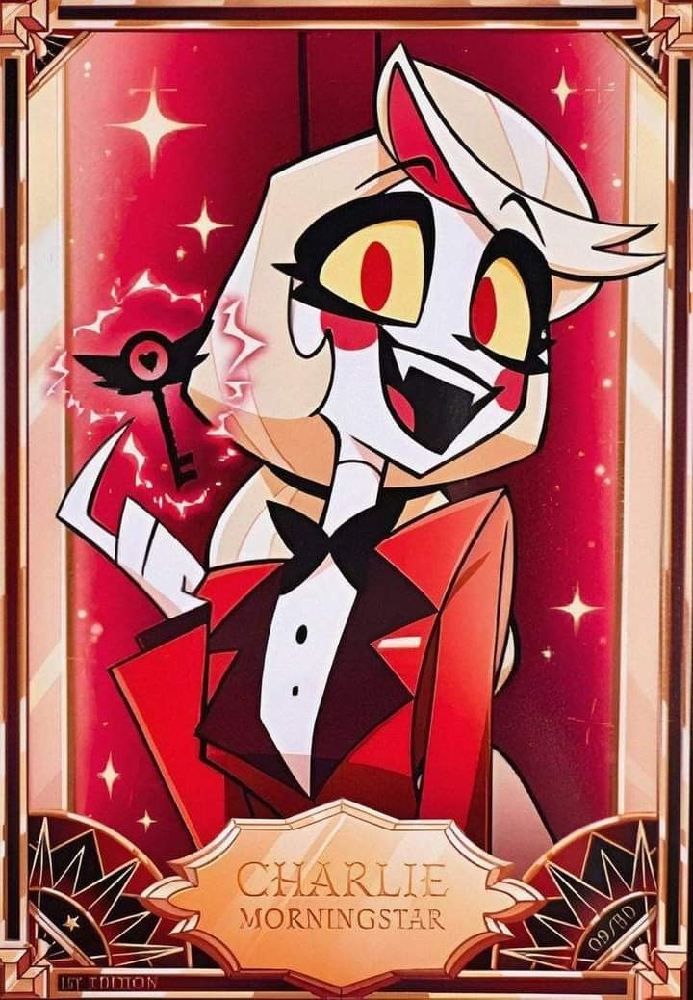
Vaggie es la novia y aliada de Charlie en Hazbin Hotel. Es fuerte y protectora, con un carácter firme que contrasta con el idealismo de Charlie, y su pasado como exorcista le da habilidades de combate y una visión más dura del Infierno.
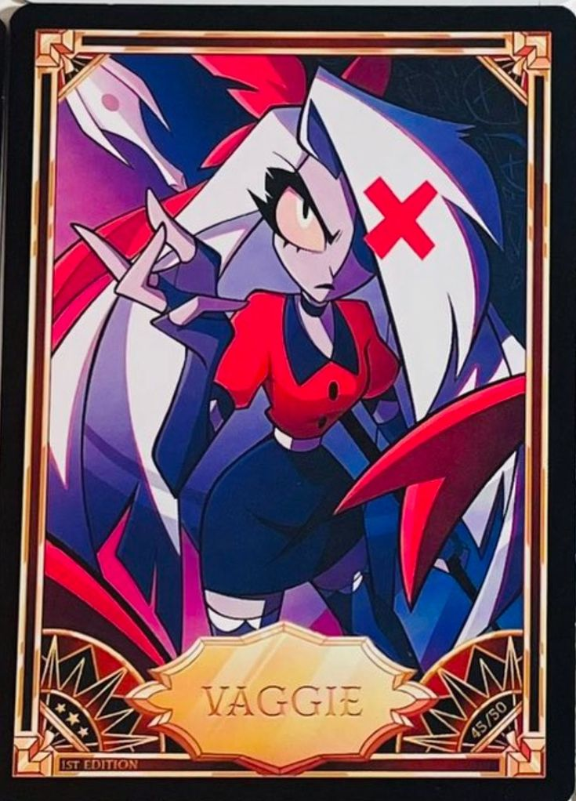
Alastor, el “Demonio de la Radio”, es un poderoso overlord del Infierno en Hazbin Hotel. Carismático y misterioso, ayuda a Charlie con el hotel aunque sus verdaderas intenciones son ambiguas.
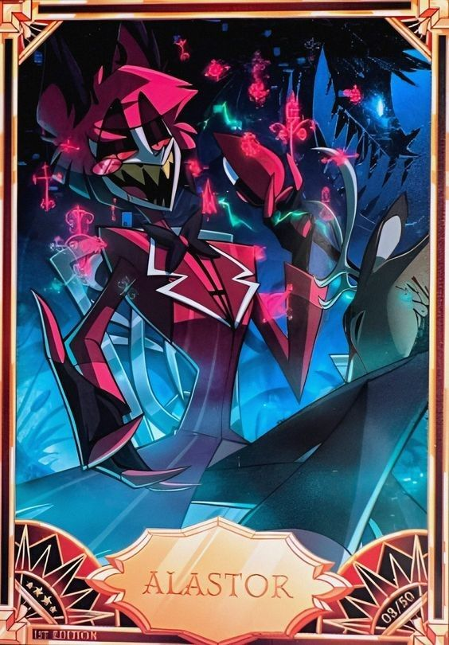
Angel Dust es un demonio araña en Hazbin Hotel, extravagante y provocador, que aporta humor y caos al hotel. Detrás de su actitud desenfadada y burlona, arrastra problemas personales y una relación conflictiva con los villanos conocidos como “Las Uves”.
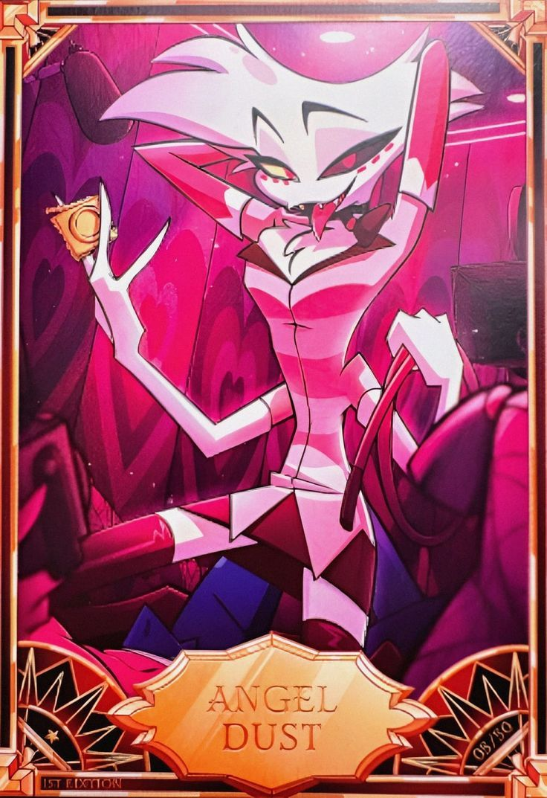
Husk es el barman del Hazbin Hotel. Es un demonio gato cínico y gruñón, con problemas de alcohol y apuestas, que Alastor reclutó. Aunque suele mostrarse apático y sarcástico, termina siendo parte esencial del equipo gracias a sus habilidades y experiencia.
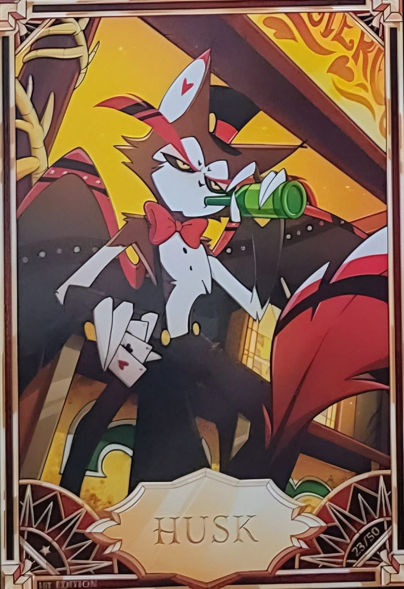
Niffty es una demonio hiperactiva y obsesionada con la limpieza en Hazbin Hotel. A pesar de su pequeña estatura y apariencia adorable, es una limpiadora eficiente y enérgica que aporta un toque de alegría y dinamismo al hotel.
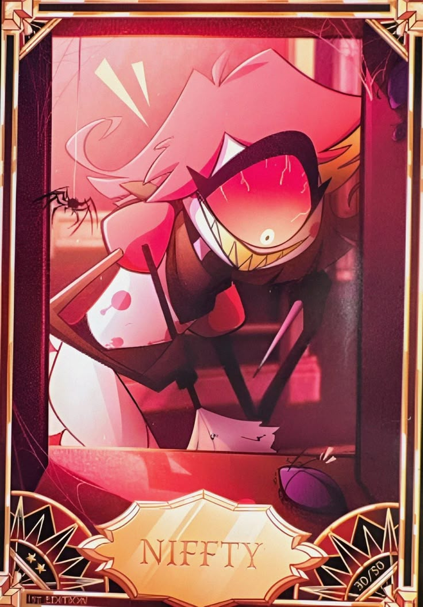
Sir Pentious es un villano recurrente en Hazbin Hotel. Es una serpiente demoníaca con aspiraciones de conquista y un estilo steampunk. A menudo intenta derrotar a Charlie y su equipo, pero sus planes suelen fracasar de manera cómica.
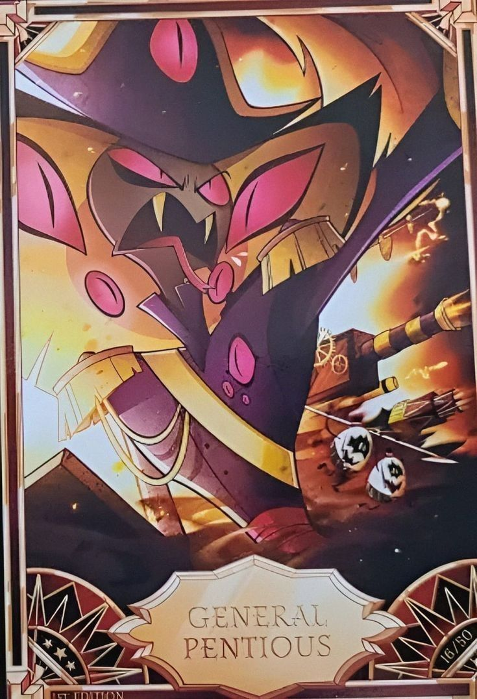
Cherri Bomb es una demonio explosiva y rebelde en Hazbin Hotel. Ex miembro de las Uves, es amiga de Angel Dust y tiene una personalidad audaz y desafiante. Aporta acción y dinamismo al grupo con su actitud combativa.
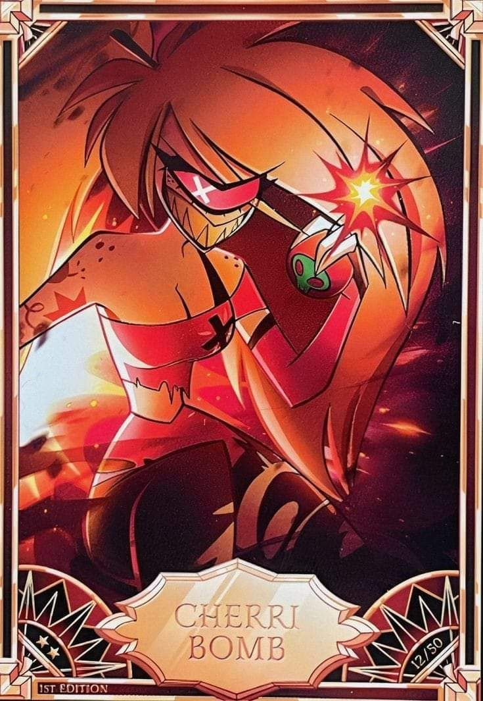
Lucifer Morningstar es el rey del Infierno y padre de Charlie en Hazbin Hotel. Aunque su presencia es imponente, muestra un lado más relajado y juguetón en comparación con su rol tradicional como gobernante del Infierno.
Vox es un demonio tecnológico y uno de los villanos principales en Hazbin Hotel. Representa la influencia de los medios y la tecnología en el Infierno, y su estilo visual se inspira en la estética retro de los televisores antiguos.
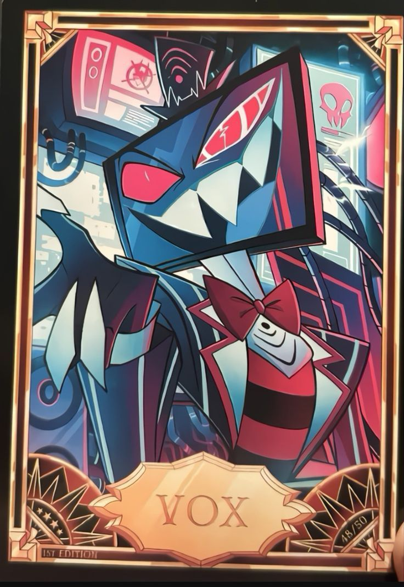
Valentino es un demonio proxeneta y uno de los antagonistas en Hazbin Hotel. Es el jefe de Angel Dust y representa la corrupción y decadencia en el Infierno, con una personalidad cruel y manipuladora.
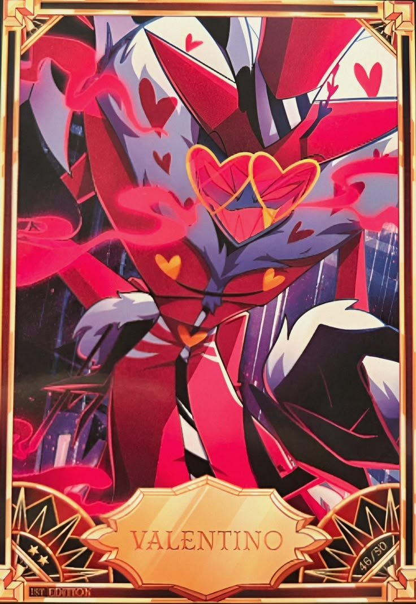
Velvette es una demonio con apariencia de conejo en Hazbin Hotel. Es una de las Uves y tiene una personalidad tímida pero leal, mostrando un lado más vulnerable en contraste con su rol como villana.
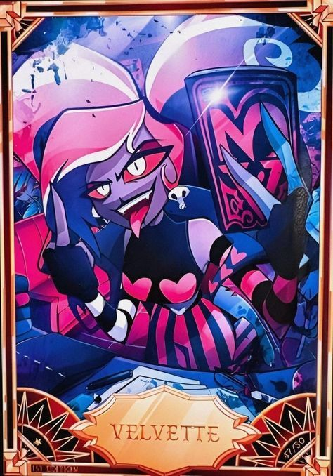
Baxter es un demonio científico y uno de los personajes secundarios en Hazbin Hotel. Es conocido por sus experimentos y su actitud excéntrica, aportando un toque de humor y locura al entorno del hotel.
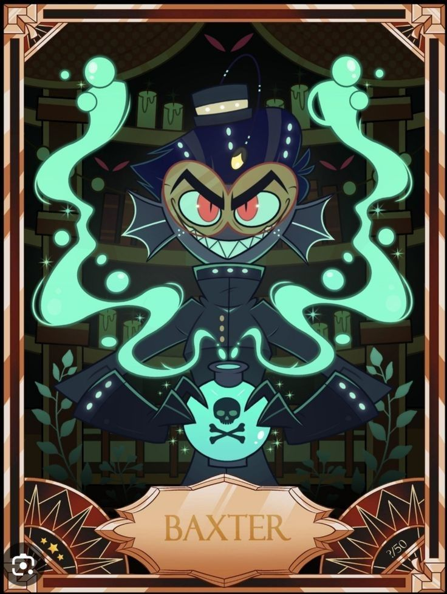